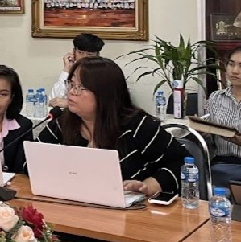

Chronic kidney disease care capacity
A Korean government-funded programme supporting medical staff in Vientiane and Luang Prabang to improve diagnosis and management of chronic kidney disease.

- Led programme design using problem tree analysis and Theory of Change with nephrologists and partner institutions.
- Coordinated training, procurement, budgets, monitoring visits and donor reporting.
- Worked with local counterparts to identify implementation issues and agree corrective actions.
Role: Team Leader · Raphael International